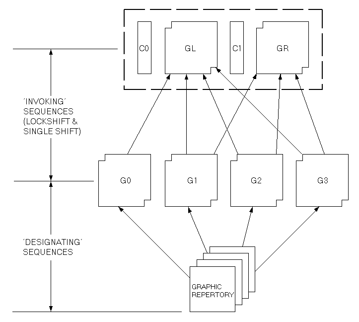
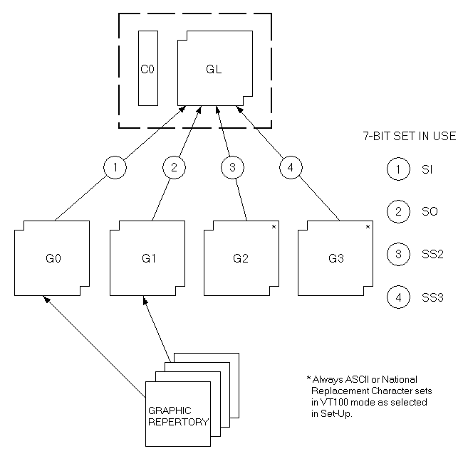
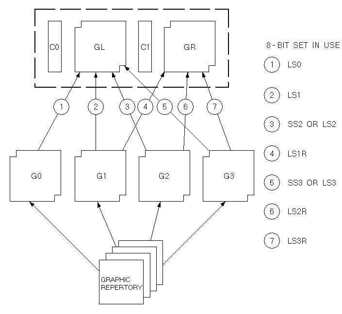
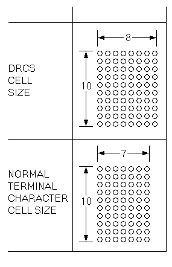
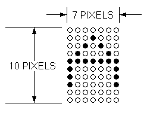
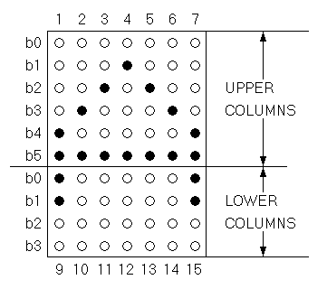
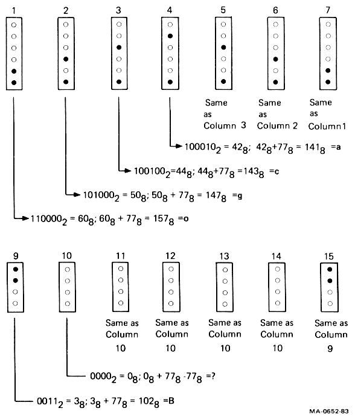

This chapter describes the terminal's response to codes it may receive from an application or host system. This Chapter assumes you are familiar with the character encoding conventions and terminology covered in Chapter 2.
All data received by the VT220 consists of single and multiple-character codes: graphic (printing or display) characters, control characters, escape sequences, control sequences and device control strings. Much of that data consists of graphic characters that simply appear on the screen with no other effect. Control characters, escape sequences, control sequences and device control strings are all "control functions" that you use in your program to specify how the terminal should process, transmit, and display characters. Each control function has a unique name and each name has a unique abbreviation (mnemonic). Both the name and the abbreviation are standardized.
By default, the terminal interprets individual control and graphic characters according to the DEC Multinational Character Set code mapping (Chapter 2).
NOTE: The terminal usually ignores control codes it does not support. However, codes sent to the terminal other than those specified in this manual can cause unexpected results.
The codes described in this chapter are described as used in VT220 mode unless otherwise indicated.
Tables 4-1 and 4-2 define the action taken by the terminal when receiving C0 and C1 control characters. The VT220 does not recognize all C0 or C1 characters. Those not shown in either table are ignored (no action taken).
Table 4-1 shows that SO (0/14) and SI (0/15) are also called LS1 and LS0, respectively. SO and SI (shift out and shift in) are the traditional ASCII names or mnemonics. LS1 and LS0 (lock shift G1 and lock shift G0) are alternate names that are useful when dealing with the variety of character set mappings possible. LS1 and LS0 are the names used in this chapter.
Table 4-2 shows the equivalent 7-bit code extension for each 8-bit C1 code. The code extensions require one more byte than the C1 codes. Chapter 2 describes when to use C1 codes and when to use 7-bit code extensions.
| Mnemonic | Code | Name | Action Taken |
|---|---|---|---|
| NUL | 0/0 | Null | Ignored when received. |
| ENQ | 0/5 | Enquiry | Answerback message is generated. |
| BEL | 0/7 | Bell | Generates bell tone if bell is enabled. |
| BS | 0/8 | Backspace | Moves cursor to the left one character position: if cursor is at left margin, no action occurs. |
| HT | 0/9 | Horizontal tabulation | Moves cursor to next tab stop, or to right margin if there are no more tab stops. Does not cause autowrap. |
| LF | 0/10 | Linefeed | Causes a linefeed or a new line operation, depending on the setting of new line mode. |
| VT | 0/11 | Vertical tabulation | Processed as LF. |
| FF | 0/12 | Form feed | Processed as LF. |
| CR | 0/13 | Carriage return | Moves cursor to left margin on current line. |
| SO (LS1) | 0/14 | Shift out (Lock shift G1) |
Invokes G1 character set into GL. G1 is designated by a select-character-set (SCS) sequence. |
| SI (LS0) | 0/15 | Shift in (Lock shift G0) |
Invoke G0 character set into GL. G0 is designated by a select-character-set sequence (SCS). |
| DC1 | 1/1 | Device Control 1 | Also referred to as XON. If XOFF support is enabled, DC1 clears DC3 (XOFF), causing the terminal to continue transmitting characters (keyboard unlocks) unless KAM mode is currently set. |
| DC3 | 1/3 | Device Control 3 | Also referred to as XOFF. If XOFF support is enabled, DC3 causes the terminal to stop transmitting characters until a DC1 control character is received. |
| CAN | 1/8 | Cancel | If received during an escape or control sequence, terminates and cancels the sequence. No error character is displayed. If received during a device control string, the DCS is terminated and no error character is displayed. |
| SUB | 1/10 | Substitute | If received during escape or control sequence, terminates and cancels the sequence. Causes a reverse question mark to be displayed. If received during a device control sequence, the DCS is terminated and reverse question mark is displayed. |
| ESC | 1/11 | Escape | Processed as escape sequence introducer. Terminates any escape, control or device control sequence which is in progress. |
| DEL | 7/15 | Delete | Ignored when received. Note: May not be used as a time fill character. |
| Mnemonic | 8-Bit Code | Equivalent 7-Bit Code Extension | Name | Action Taken |
|---|---|---|---|---|
| IND | 8/4 | 1/11 4/4 ESC D |
Index | Moves cursor down one line in same column. If cursor is at bottom margin, screen performs a scroll up. |
| NEL | 8/5 | 1/11 4/5 ESC E |
Next line | Moves cursor to first position on next line. If cursor is at bottom margin, screen performs a scroll up. |
| HTS | 8/8 | 1/11 4/8 ESC H |
Horizontal tab set | Sets one horizontal tab stop at the column where the cursor is. |
| RI | 8/13 | 1/11 4/13 ESC M |
Reverse index | Moves cursor up one line in same column. If cursor is at top margin, screen performs a scroll down. |
| SS2 | 8/14 | 1/11 4/14 ESC N |
Single shift G2 | Temporarily invokes G2 character set into GL for the next graphic character. G2 is designated by a select-character-set (SCS) sequence. |
| SS3 | 8/15 | 1/11 4/15 ESC O |
Single shift G3 | Temporarily invokes G3 character set into GL for the next graphic character. G3 is designated by a select-character-set (SCS) sequence. |
| DCS | 9/0 | 1/11 5/0 ESC P |
Device control string | Processed as opening delimiter of a device control string for device control use. |
| CSI | 9/11 | 1/11 5/11 ESC [ |
Control sequence introducer | Processed as control sequence introducer. |
| ST | 9/12 | 1/11 5/12 ESC \ |
String terminator | Processed as closing delimiter of a string opened by DCS. |
You can set the terminal to a particular level of operation for compatibility with an application. There are two possible levels, level 1 (VT100 operation) and level 2 (VT200 operation). You can set the VT220 (a level 2 terminal) to either level 1 or level 2. These functional levels are defined in Table 4-3.
You can set the compatibility level of the terminal by using the following sequences.
NOTE: You only have to apply restrictions for a lower compatibility level when there is a noncompatible interaction with software written for the lower level.
| Sequence | Action |
|---|---|
9/11 3/6 3/1 2/2 7/0 CSI 6 1 " p |
Set terminal for level 1 compatibility (VT100 mode). |
9/11 3/6 3/2 2/2 7/0 CSI 6 2 " p |
Set terminal for level 2 compatibility (VT200 mode, 8-bit controls). |
9/11 3/6 3/2 3/11 3/0 2/2 7/0 CSI 6 2 ; 0 " por 9/11 3/6 3/2 3/11 3/2 2/2 7/0 CSI 6 2 ; 2 " p |
Set terminal for level 2 compatibility (VT200 mode, 8-bit controls). |
9/11 3/6 3/2 3/11 3/1 2/2 7/0 CSI 6 2 ; 1 " p |
Set terminal for level 2 compatibility (VT200 mode, 7-bit controls). |
| Difference Area | Level 1 (VT100 Mode) |
Level 2 (VT200 Mode) |
|---|---|---|
| Keyboard | Sends ASCII only. Keystrokes that normally send DEC Supplemental Characters transfer nothing. (Interpreted as an error.) User-defined keys are do not operate. Special function keys and six editing keys do not operate (except F11, F12, and F13, which send ESC, BS, and LF, respectively). |
Permits full use of VT220 keyboard. |
| 7 or 8 bits | The 8th bit of all received characters is set to zero (0). | The 8th bit of all received characters is significant. |
| Character Sets | Only ASCII, national replacement characters, and DEC special graphics are available. | All VT220 character sets are available. |
| C1 Control Characters | All transmitted C1 controls are forced to S7C1 state and sent as 7-bit escape sequences. | – |
Character encoding in the VT220 was introduced in Chapter 2. The control functions you need to select different graphic character sets are described in this section. Coding differences between the VT220 and VT100 terminals are pointed out where they may affect software compatibility between the VT220 and VT100-type terminals.
The VT220's graphic character repertoire consists of the following graphic sets. (See Chapter 2 for a description of these character sets).
Generally, you select character sets as follows (Figure 4-1).

NOTE: GR is available only in VT200 mode.
First, you use SCS sequences to designate graphic sets as G0, G1, G2, and G3. This makes the graphics sets available for your program when you map them into GL or GR. To map one of these sets into GL or GR, you must invoke the selected set (G0 through G3) into GL or GR by using locking shifts (LS0, LS1, LS2, LS3, LS1R, LS2R, LS3R) or single shifts (SS2, SS3).
Character sets remain designated until the terminal receives another SCS sequence. All locking shifts remain active until the terminal receives another locking shift. Single shifts SS2 and SS3 are active for only the next single graphic character.
You do not need to select character sets in this manner every time you use the terminal, because there is a default mapping. The default mapping in VT200 mode is ASCII graphics in GL and DEC supplemental graphics in GR (DEC multinational). The default graphic character set mapping is reset whenever you power up the terminal. Your application can also select the default mapping by using the soft terminal reset sequence (DECSTR).
The following sections describe all control functions for designating and invoking graphic character sets.
You designate hard character sets (ASCII, DEC supplemental graphics, DEC special graphics, and national replacement character sets) as G0 through G3, using the following escape sequence formats.
| Escape Sequence | Designated As |
|---|---|
1/11 2/8
ESC ( {final} |
G0 |
1/11 2/9
ESC ) {final} |
G1 |
1/11 2/10
ESC * {final} |
G2 |
1/11 2/11
ESC + {final} |
G3 |
NOTE: You cannot designate a G2 and G3 set in VT100 mode.
The final character in the escape sequences above represents the character set you want to designate. Table 4-4 lists the available character sets and their associated final character.
To designate a character set as any of the graphic sets (G0 through G3), you must include a final character in one of the escape sequences in Table 4-4. For example, to designate the ASCII character set as the G0 graphic set you would use the following escape sequence.
ESC ( B
To designate the ASCII character set as the G2 graphic set you would use this escape sequence.
ESC * B
Note that there is a definite pattern of escape sequences in the designation process.
| Character Set | Final Character | |
|---|---|---|
| ASCII | 4/2 B |
|
| DEC supplemental (VT200 mode only) |
3/12 < |
|
| DEC special graphics | 3/0 0 |
|
| National replacement character sets | ||
NOTE: Only one national character set is available at any one time (national mode). |
||
| British | 4/1 A |
|
| Dutch | 3/4 4 |
|
| Finnish | 4/3 3/5 C or 5 |
|
| French | 5/2 R |
|
| French Canadian | 5/1 Q |
|
| German | 4/11 K |
|
| Italian | 5/9 Y |
|
| Norwegian/Danish | 4/5 3/6 E or 6 |
|
| Spanish | 5/10 Z |
|
| Swedish | 4/8 3/7 H or 7 |
|
| Swiss | 3/13 = |
|
You can define a soft character set (font) that may or may not replace one of the existing hard sets (ROM fonts). If you do replace a hard set, the replacement occurs for both the 80 and 132-column versions.
A soft character set that replaces a hard character set remains in effect until the soft character set is cleared or redefined. The soft character set is cleared by the "Recall" and "Default" set-up features, and by the power-up self-test. The soft character set is redefined by a DECDLD device control string, described later in this chapter. If the soft character set you define does not replace an existing hard set, then it is used in addition to the hard sets.
NOTE: Only VT220 mode supports the designation of a soft character set.
You designate a soft (down-line-loadable) character set by using the following escape sequences.
| Escape Sequence | Designate As |
|---|---|
1/11 2/8 ....... ESC ( Dscs |
G0 |
1/11 2/9 ....... ESC ) Dscs |
G1 |
1/11 2/10 ...... ESC * Dscs |
G2 |
1/11 2/11 ...... ESC + Dscs |
G3 |
In these sequences, Dscs is a variable that defines the soft character set used.
| Dscs | Function |
|---|---|
I I F |
Generic Dscs. A Dscs can consist of 0 to 2 intermediates (I) and a final (F). Intermediates are in the range 2/0 to 2/15. Finals are in the range 3/0 to 7/14. |
Here are three examples of Dscs.
| Dscs | Function |
|---|---|
2/0 4/0 sp @ |
Defines a character set as unregistered soft set. This value is the recommended default value for user-defined sets. |
4/2 B |
Defines the soft character set to be ASCII. |
2/6 2/5 4/3 & % c |
Defines the character set as "&%c", which is
currently an unregistered set. |
Once you have designated your character sets, you can invoke G0, G1, G2, or G3 into GL or GR. To invoke a set, you use the locking shift (LS) control functions, as shown in Table 4-5 and Figures 4-2 and 4-3.
| Control Name | Coding | Function |
|---|---|---|
| LS0 (lock shift G0) | 0/15 SI |
Invoke G0 into GL. (default) |
| LS1 (lock shift G1) | 0/14 SO |
Invoke G1 into GL. |
| LS1R (lock shift G1, right) | 1/11 7/14 ESC ~ |
Invoke G1 into GR (VT200 mode only). This sequence can cause software incompatibility problems. |
| LS2 (lock shift G2) | 1/11 6/14 ESC n |
Invoke G2 into GL (VT200 mode only). This sequence can cause software incompatibility problems. |
| LS2R (lock shift G2, right) | 1/11 7/13 ESC } |
Invoke G2 into GR (VT200 mode only). (default) |
| LS3 (lock shift G3) | 1/11 6/15 ESC o |
Invoke G3 into GL (VT200 mode only). This sequence can cause software incompatibility problems. |
| LS3R (lock shift G3, right) | 1/11 7/12 ESC | |
Invoke G3 into GR (VT200 mode only). |


After you designate your character sets, you can invoke G2 or G3 into GL for a single graphic character. To do this, you use the single shift (SS) control functions described below and in Figures 4-2 and 4-3.
All single shifts are active for only the next single graphic character. The terminal returns the previous character set after displaying a single graphic character.
SS2 is an 8-bit control character (8/14) that invokes G2 into GL for the next graphic character. You can also express SS2 as an escape sequence when coding for a 7-bit environment, as follows.
1/11 4/14
ESC N
SS3 is an 8-bit control character (8/15) that invokes G3 into GL for the next graphic character. You can also express SS3 as an escape sequence when coding for a 7-bit environment as follows.
1/11 4/15
ESC O
You can use select C1 controls (code extension announcers) in your program to control the representation of C1 control codes returned to the application by the terminal. (See Chapter 2 for information on working with 7-bit and 8-bit environments.) The terminal always accepts 7-bit or 8-bit forms for C1 controls in either VT200 mode.
Digital recommends that you use DECSCL sequences instead of select C1 controls. The advantage is that DECSCL performs a soft reset, putting the terminal in a known state, in addition to setting the terminal mode and C1 control state.
NOTE: These sequences are supported only in VT200 mode.
The following sequence converts all C1 codes returned to the application to their equivalent 7-bit code extensions.
1/11 2/0 4/7
ESC sp F
NOTE: The S7C1T sequence is ignored in VT100 or VT52 mode.
The following sequence returns C1 codes to the application without converting them to their equivalent 7-bit code extensions.
1/11 2/0 4/6
ESC sp G
A mode is one of several operating states used by the terminal. Each mode changes the way the terminal works. Table 4-6 lists the selectable modes and their set/reset control sequences. The following sections describe these modes.
Each mode has an identifying name (mnemonic). You can set or reset modes individually or in strings using set mode (SM) or reset mode (RM) control sequences. You can also lock certain features, called user preference features, by using the General Set-Up screen; this prevents the host from changing the feature.
Digital private control sequences (permitted within the extensions of ANSI standards) are identified by DEC in the control sequence mnemonic. These sequences include a question mark character (?) after the control sequence introducer.
You can also select these modes from the keyboard by using set-up screens.
| Name | Mnemonic | Set Mode | Reset Mode* |
|---|---|---|---|
| Keyboard action† | KAM | LockedCSI 2 h |
UnlockedCSI 2 l |
| Insert/ replace | IRM | InsertCSI 4 h |
ReplaceCSI 4 l |
| Send/ receive | SRM | OffCSI 12 h |
OnCSI 12 l |
| Line feed/ new line | LNM | New LineCSI 20 h |
Line FeedCSI 20 l |
| Cursor key | DECCKM | ApplicationCSI ? 1 h |
CursorCSI ? 1 l |
| ANSI/VT52 | DECANM | N/A | VT52CSI ? 2 l |
| Column | DECCOLM | 132 ColumnCSI ? 3 h |
80 ColumnCSI ? 3 l |
| Scrolling† | DECSCLM | SmoothCSI ? 4 h |
JumpCSI ? 4 l |
| Screen† | DECSCNM | ReverseCSI ? 5 h |
NormalCSI ? 5 l |
| Origin | DECOM | OriginCSI ? 6 h |
AbsoluteCSI ? 6 l |
| Auto wrap | DECAWN | OnCSI ? 7 h |
OffCSI ? 7 l |
| Auto repeat† | DECARM | OnCSI ? 8 h |
OffCSI ? 8 l |
| Print form feed | DECPFF | OnCSI ? 18 h |
OffCSI ? 18 l |
| Print extent | DECPEX | Full ScreenCSI ? 19 h |
Scrolling RegionCSI ? 19 l |
| Text cursor enable | DECTCEM | OnCSI ? 25 h |
OffCSI ? 25 l |
| Keypad | DECKPAM DECKPNM |
ApplicationESC = |
NumericESC > |
| Character set | DECNRCM | NationalCSI ? 42 h |
MultinationalCSI ? 42 l |
| * The last character of each sequence is lowercase L (6/12). | |||
| † User preference feature | |||
The set mode sequence for ANSI modes is as follows.
9/11 3/11 3/11 6/8
CSI Ps ; .... ; Ps h
The set mode sequence for Digital private modes is as follows.
9/11 3/15 3/11 3/11 6/8
CSI ? Ps ; .... ; Ps h
You use these sequences to set the ANSI and Digital private modes, individually or in strings. Tables 4-7 and 4-8 list the Ps parameters. You cannot use ANSI modes and Digital private modes in the same SM string.
The reset mode sequence for ANSI modes is as follows.
9/11 3/11 3/11 6/12
CSI Ps ; .... ; Ps l
The reset mode sequence for Digital private modes is as follows.
9/11 3/15 3/11 3/11 6/12
CSI ? Ps ; .... ; Ps l
You use these sequences to reset the ANSI and Digital private modes, individually or in strings. Tables 4-7 and 4-8 list the Ps parameters. You cannot use ANSI modes and Digital private modes in the same RM string.
| Name | Mnemonic | Parameter (Ps) |
|---|---|---|
| Error (ignored) | – | 0 (3/0) |
| Keyboard action | KAM | 2 (3/2) |
| Insert/replace | IRM | 4 (3/4) |
| Send/receive | SRM | 12 (3/1 3/2) |
| Line feed/new line | LNM | 20 (3/2 3/0) |
| Name | Mnemonic | Parameter (Ps) |
|---|---|---|
| Error (ignored) | – | 0 (3/0) |
| Cursor key | DECCKM | 1 (3/1) |
| ANSI/VT52 | DECANM | 2 (3/2) |
| Column | DECCOLM | 3 (3/3) |
| Scroll | DECSCLM | 4 (3/4) |
| Screen | DECSCNM | 5 (3/5) |
| Origin | DECOM | 6 (3/6) |
| Auto wrap | DECAWM | 7 (3/7) |
| Auto repeat | DECARM | 8 (3/8) |
| Printer form feed | DECPFF | 18 (3/1 3/8) |
| Printer extent | DECPEX | 19 (3/1 3/9) |
| Text cursor enable | DECTCEM | 25 (3/2 3/5) |
| National replacement character sets | DECNRCM | 42 (3/4 3/2) |
Keyboard Action mode lets your program lock and unlock the keyboard. When the keyboard is locked, it cannot send codes to the program. To alert the operator, the terminal turns on the Wait indicators and disables the keyclick features whenever the keyboard is locked.
You can set or reset keyboard action mode as follows.
NOTE: This is a user preference feature that you can lock by using set-up.
| Mode | Sequence | Action |
|---|---|---|
| Set | 9/11 3/2 6/8 CSI 2 h |
Locks the keyboard for all following keystrokes. |
| Reset | 9/11 3/2 6/12 CSI 2 l |
Unlocks the keyboard, unless it is locked by DC3. |
The terminal displays received characters at the cursor position. Insert/Replace mode determines how the terminal adds characters to the screen. Insert mode displays the new character and moves previously displayed characters to the right. Replace mode adds characters by replacing the character at the cursor position.
You can set or reset insert/replace mode as follows.
| Mode | Sequence | Action |
|---|---|---|
| Set | 9/11 3/4 6/8 CSI 4 h |
Selects insert mode. New display characters move old display characters to the right. Characters moved past the right margin are lost. |
9/11 3/4 6/12 CSI 4 l |
Selects replacement mode. New display characters replace old display characters at the cursor position. The old character is erased. |
Send/receive mode turns local echo on or off. When send/receive mode is reset (local echo on), every character sent from the keyboard automatically appears on the screen. Therefore, the host does not have to send (echo) the character back to the terminal display. When send/receive mode is set (local echo off), the terminal only sends characters to the application. The host must echo the characters back to the screen.
You can set or reset send/receive mode as follows.
| Mode | Sequence | Action |
|---|---|---|
| Set | 9/11 3/1 3/2 6/8 CSI 1 2 h |
Turns off (disables) local echo. When the terminal sends characters to the host, the host must echo characters back to the screen. |
| Reset | 9/11 3/1 3/2 6/12 CSI 1 2 l |
Turns on (enables) local echo. When the terminal sends characters, the characters are automatically sent to the screen. |
Line feed/new line mode selects the control character(s) transmitted to the application by the Return and Enter keys. Enter sends the same code as Return only when the auxiliary keypad is in Keypad numeric mode (DECKPNM).
Line feed/new line also selects the action taken by the terminal when receiving line feed (LF), form feed (FF), or vertical tab (VT) codes. These three codes are always processed identically.
You set and reset line feed/new line mode as follows.
NOTE: For compatibility with Digital software, this mode should always be reset.
| Mode | Sequence | Action |
|---|---|---|
| Set | 9/11 3/2 3/0 6/8 CSI 2 0 h |
Causes a received LF, FF, or VT code to move the cursor to the first column of the next line. Return sends both a CR and a LF code. |
| Reset | 9/11 3/2 3/0 6/12 CSI 2 0 l |
Causes a received LF, FF, or VT code to move the cursor to the next line in the current column. Return sends a CR code only. |
Text cursor enable mode determines if the text cursor is visible.
You set and reset this mode as follows.
| Mode | Sequence | Action |
|---|---|---|
| Set | 9/11 3/15 3/2 3/5 6/8 CSI ? 2 5 h |
Makes the cursor visible. |
| Reset | 9/11 3/15 3/2 3/5 6/12 CSI ? 2 5 l |
Makes the cursor not visible. |
Cursor key mode determines the characters sent by the cursor keys.
You can set and reset this mode as follows.
| Mode | Sequence | Action |
|---|---|---|
| Set | 9/11 3/15 3/1 6/8 CSI ? 1 h |
Causes the cursor keys to send application control functions. |
| Reset | 9/11 3/15 3/1 6/12 CSI ? 1 l |
Causes the cursor keys to generate ANSI cursor control sequences. |
In ANSI mode, reset selects VT52 compatibility mode. In VT52 mode, the terminal responds like a VT52 terminal to private Digital sequences. The reset state of this mode sets the terminal to the VT52 mode. There is no set state for this mode.
9/11 3/15 3/2 6/12 CSI ? 2 l
Sets the terminal to VT52 mode.
Column mode selects the number of columns per line (80 or 132) on the screen. The screen can display 24 lines of text with either selection.
You select the number of columns per line as follows.
NOTE: When the terminal receives the sequence, the screen is erased and the cursor moves to the home position. This also sets the scrolling region for full screen (24 lines).
| Mode | Sequence | Action |
|---|---|---|
| Set | 9/11 3/15 3/3 6/8 CSI ? 3 h |
Selects 132 columns per line. |
| Reset | 9/11 3/15 3/3 6/12 CSI ? 3 l |
Selects 80 columns per line. |
Scrolling is the upward or downward movement of existing lines on the screen. There are two methods of scrolling, jump scroll and smooth scroll (6 lines per second).
You can set or reset the scroll mode as follows.
NOTE: This is a user preference feature that you can lock by using set-up.
| Mode | Sequence | Action |
|---|---|---|
| Set | 9/11 3/15 3/4 6/8 CSI ? 4 h |
Selects smooth scroll. Smooth scroll lets the terminal add no more than 6 lines per second to the screen. |
| Reset | 9/11 3/15 3/4 6/12 CSI ? 4 l |
Selects jump scroll. Jump scroll lets the terminal add lines to the screen as fast as possible. |
Screen mode selects either a dark or light (reverse) display background on the screen.
You can set or reset screen mode as follows.
NOTE: This is a user preference feature that you can lock by using set-up.
| Mode | Sequence | Action |
|---|---|---|
| Set | 9/11 3/15 3/5 6/8 CSI ? 5 h |
Selects reverse video (dark characters on a light background). |
| Reset | 9/11 3/15 3/5 6/12 CSI ? 5 l |
Selects normal screen (light characters on a dark background). |
Origin mode allows cursor addressing relative to a user-defined origin. This mode resets when the terminal is powered up or reset. It does not affect the erase in display (ED) function.
You can set or reset origin mode as follows.
| Mode | Sequence | Action |
|---|---|---|
| Set | 9/11 3/15 3/6 6/8 CSI ? 6 h |
Selects the home position with line numbers starting at top margin of the user-defined scrolling region. The cursor cannot move out of the scrolling region. |
| Reset | 9/11 3/15 3/6 6/12 CSI ? 6 l |
Selects the home position in the upper-left corner of screen. Line numbers are independent of the scrolling region. Use the CUP sequence to move the cursor out of the scrolling region. |
This mode selects where received graphic characters appear when the cursor is at the right margin.
You can set or reset auto wrap mode as follows.
NOTE: Regardless of this selection, the tab character never moves the cursor to the next line.
| Mode | Sequence | Action |
|---|---|---|
| Set | 9/11 3/15 3/7 6/8 CSI ? 7 h |
Selects auto wrap. Graphic display characters received when the cursor is at the right margin appear on the next line. The display scrolls up if the cursor is at the end of the scrolling region. |
| Reset | 9/11 3/15 3/7 6/12 CSI ? 7 l |
Turns off auto wrap. Graphic display characters received when the cursor is at the right margin replace previously displayed characters. |
Auto repeat mode selects automatic key repeating. When auto repeat mode is set, a key pressed for more than 0.5 seconds automatically repeats the transmission of the character until the key is released. The following keys never auto repeat: Hold Screen, Print Screen, Set-Up, Data/Talk, Break, Return, Compose Character, Lock, Shift, and Ctrl.
You can set or reset auto repeat mode as follows.
NOTE: This is a user preference feature that you can lock by using set-up.
| Mode | Sequence | Action |
|---|---|---|
| Set | 9/11 3/15 3/8 6/8 CSI ? 8 h |
Selects auto repeat mode. A key pressed for more than 0.5 seconds automatically repeats. |
| Reset | 9/11 3/15 3/8 6/12 CSI ? 8 l |
Turns off auto repeat. Keys pressed do not automatically repeat. |
This mode determines whether or not the terminal sends a print termination character after a screen print. The form feed control character (FF) serves as the print termination character.
You can set or reset print form feed mode as follows.
| Mode | Sequence | Action |
|---|---|---|
| Set | 9/11 3/15 3/1 3/8 6/8 CSI ? 1 8 h |
Selects form feed (FF) as print termination character. The terminal sends this character to the printer after each print screen operation. |
| Reset | 9/11 3/15 3/1 3/8 6/12 CSI ? 1 8 l |
Selects no termination character. The terminal does not send a form feed (FF) to the printer after each print screen operation. |
Print extent mode selects the full screen or the scrolling region to print during a print screen operation.
You can set or reset this mode as follows.
| Mode | Sequence | Action |
|---|---|---|
| Set | 9/11 3/15 3/1 3/9 6/8 CSI ? 1 9 h |
Selects full screen to print during a print screen operation. |
| Reset | 9/11 3/15 3/1 3/9 6/12 CSI ? 1 9 l |
Selects scrolling region to print during a print screen operation. |
The auxiliary keypad generates either numeric characters or control functions. Selecting application or numeric keypad mode determines the type of characters.
You can select the keypad mode as follows.
NOTE: When the terminal is powered up or reset, the terminal selects numeric keypad mode.
| Mode | Sequence | Action |
|---|---|---|
| Application (DECKPAM) |
1/11 3/13 ESC = |
Selects application keypad mode. Keypad keys send application control functions. |
| Numeric (DECKPNM) |
1/11 3/14 ESC > |
Selects numeric keypad mode. Keypad keys send characters that match the numeric, comma, period, and minus sign keys on main keypad. PF1 through PF4 send control functions. |
Character set mode determines whether the terminal uses national replacement character sets or the DEC multinational character set.
You can select this mode as follows.
| Mode | Sequence | Action |
|---|---|---|
| Set | 9/11 3/15 3/4 3/2 6/8 CSI ? 4 2 h |
Selects national mode. The terminal now generates 7-bit characters from the NRC sets. |
| Reset | 9/11 3/15 3/4 3/2 6/12 CSI ? 4 2 l |
Selects multinational mode. The terminal can now generate 8-bit characters from the multinational character set, including 7-bit characters from the ASCII set. |
The cursor indicates the active screen position where the next character will appear (in the absence of auto wrap). A number of operations implicitly affect cursor positioning. In addition, you can control cursor movement using the following sequences.
NOTE: Pn is a variable, ASCII coded, numeric parameter. If you select no parameter or a parameter value of 0, the terminal assumes the parameter equals 1.
| Name | Sequence | Action |
|---|---|---|
| Cursor Up (CUU) |
9/11 4/1 CSI Pn A |
Moves the cursor up Pn lines in the same column. The cursor stops at the top margin. |
| Cursor Down (CUD) |
9/11 4/2 CSI Pn B |
Moves the cursor down Pn lines in the same column. The cursor stops at the bottom margin. |
| Cursor Forward (CUF) |
9/11 4/3 CSI Pn C |
Moves the cursor right Pn columns. The cursor stops at the right margin. |
| Cursor Backward (CUB) |
9/11 4/4 CSI Pn D |
Moves the cursor left Pn columns. The cursor stops at the left margin. |
| Cursor Position (CUP) |
9/11 3/11 4/8 CSI Pl ; Pc H |
Moves the cursor to line Pl, column Pc. The numbering of the lines and columns depends on the state (set/reset) of origin mode (DECOM). |
| Horizontal And Vertical Position (HVP) |
9/11 3/11 6/6 CSI Pl ; Pc f |
Moves the cursor to line Pl, column Pc. The numbering of the lines and columns depends on the state (set/reset) of origin mode (DECOM). Digital recommends using CUP instead of HVP. |
| Index (IND) | 1/11 4/4 ESC D |
IND is an 8-bit control character (8/4). It can be expressed as an escape sequence for a 7-bit environment. IND moves the cursor down one line in the same column. If the cursor is at the bottom margin, the screen performs a scroll-up. |
| Reverse Index (RI) | 1/11 4/13 ESM M |
RI is an 8-bit control character (8/13). It can be expressed as an escape sequence for a 7-bit environment. RI moves the cursor up one line in the same column. If the cursor is at the top margin, the screen performs a scroll-down. |
| Next Line (NEL) | 1/11 4/5 ESC E |
NEL is an 8-bit control character (8/5). It can be expressed as an escape sequence for a 7-bit environment. NEL moves the cursor to the first position on the next line. If the cursor is at the bottom margin, the screen performs a scroll-up. |
| Save Cursor (DECSC) | 1/11 3/7 ESC 7 |
Saves the following in terminal memory.
|
| Restore Cursor (DECRC) | 1/11 3/8 ESC 8 |
Restores the states described for (DECSC) above. If none of these characteristics were saved, the cursor moves to home position; origin mode is reset; no character attributes are assigned; and the default character set mapping is established. |
You select tab stop positions on the horizontal lines of the screen. The cursor advances (tabs) to the next tab stop when the terminal receives a horizontal tab code (HT, 0/9). If there is no next tab, HT moves the cursor to the right margin.
You can set and clear the tab stops as follows.
NOTE: This is a user preference feature that you can lock in set-up.
| Name | Sequence | Action |
|---|---|---|
| Horizontal Tab Set (HTS) | 1/11 4/8 ESC H |
HTS sets a tab stop at the current column. HTS is an 8-bit control character (8/8) that you can also express as an escape sequence when coding for a 7-bit environment. |
| Tabulation Clear (TBC) | 9/11 6/7 CSI g |
Clears a horizontal tab stop at cursor position. |
9/11 3/0 6/7 CSI 0 g |
Clears a horizontal tab stop at cursor position. | |
9/11 3/3 6/7 CSI 3 g |
Clears all horizontal tab stops. |
Character rendition and attributes are display features that affect the way a character is displayed, without changing the character. You can change character rendition using select graphic rendition (SGR) sequences. You can also designate characters to be erasable or not erasable when by using the select character attribute (DECSCA) sequence. DECSCA affects erase sequences.
You can select one or more character renditions at a time by using the following format.
9/11 3/11 6/13 CSI Ps ; Ps ... m
When you use multiple parameters, they are executed in sequence. The effects are cumulative. For example, you can change from increased intensity to blinking-underlined as follows.
9/11 3/0 3/11 3/4 3/11 3/5 6/13 CSI 0 ; 4 ; 5 m
When you select a single parameter, no delimiter (3/11) is used. For example, you can select the blinking only parameter as follows.
9/11 3/5 6/13 CSI 5 m
After you select an attribute, all new characters received by the terminal appear with that attribute. If you move the characters by scrolling, the attribute moves with the characters.
You can select character attributes by using the formats described above and the following Ps parameter values.
| Ps | Action |
|---|---|
3/0 0 |
All attributes off. |
3/1 1 |
Display bold. |
3/4 4 |
Display underscored. |
3/5 5 |
Display blinking. |
3/7 7 |
Display negative (reverse) image. |
3/2 3/2 2 2 |
Display normal intensity. |
3/2 3/4 2 4 |
Display not underlined. |
3/2 3/5 2 5 |
Display not blinking. |
3/2 3/7 2 7 |
Display positive image. |
You can select all characters to be erasable or not erasable by using the following format. (See the "Erasing" section in this chapter.)
NOTE: This sequence is supported only in VT200 mode.
9/11 2/2 7/1 CSI Ps " q
Ps is one of the following values.
| Ps | Action |
|---|---|
| 0 | All attributes off. (Does not apply to SGR.) |
| 1 | Designate character as not erasable by DECSEL/DECSED. (Attribute on.) |
| 2 | Designate character as erasable by DECSEL/DECSED. (Attribute off.) |
NOTE: A parameter value of 0 implies the default, which is attributes off (erasable by DECSEL/DECSED). A parameter value of 2 is an explicit request for this attribute to be off (so the character is erasable by DECSEL/DECSED).
Lines attributes are display features that affect a complete display line. The cursor selects the line affected by the attribute. The cursor stays in the same character position when the attribute changes, unless the attribute would move the cursor past the right margin. In that case, the cursor stops at the right margin. When you move lines on the screen by scrolling, the attribute moves with the line. Select line attributes by using the following sequences.
NOTE: If you erase an entire line while using the erase in display (ED) sequence, the line attribute changes to single-height and single-width.
These sequences make the line with the cursor the top or bottom half of a double-height, double-width line. You must use these sequences in pairs on adjacent lines. The same character must be used on both lines to form a full character. If the line was previously single-width, single-height, all characters to the right of center are lost.
| Top Half | Bottom Half |
|---|---|
1/11 2/3 3/3 ESC # 3 |
1/11 2/3 3/4 ESC # 4 |
The DECSWL sequence makes the line with the cursor single-width, single-height. This is the line attribute for all new lines on the screen.
1/11 2/3 3/5 ESC # 5
The DECDWL sequence makes the line with the cursor double-width, single-height. If the line was previously single-width, single-height, all characters to the right of center screen are lost.
1/11 2/3 3/6 ESC # 6
You use editing sequences to insert and delete characters and lines of characters at the cursor position. The cursor position does not change when inserting or deleting lines.
You can delete characters or insert and delete lines as follows.
NOTE: Pn is a variable, ASCII-coded, numeric parameter. If you select no parameter or a parameter value of 0, the terminal assumes a parameter value of 1.
| Name | Sequence | Action |
|---|---|---|
| Insert Line (IL) | 9/11 4/12 CSI Pn L |
Inserts Pn lines at the cursor. If fewer than Pn lines remain from the current line to the end of the scrolling region, the number of lines inserted is the lesser number. Lines within the scrolling region at and below the cursor move down. Lines moved past the bottom margin are lost. The cursor is reset to the first column. This sequence is ignored when the cursor is outside the scrolling region. |
| Delete Line (DL) | 9/11 4/13 CSI Pn M |
Deletes Pn lines starting at the line with the cursor. If fewer than Pn lines remain from the current line to the end of the scrolling region, the number of lines deleted is the lesser number. As lines are deleted, lines within the scrolling region and below the cursor move up, and blank lines are added at the bottom of the scrolling region. The cursor is reset to the first column. This sequence is ignored when the cursor is outside the scrolling region. |
| Insert Characters (ICH) (VT200 mode only) |
9/11 4/0 CSI Pn @ |
Insert Pn blank characters at the cursor position, with the character attributes set to normal. The cursor does not move and remains at the beginning of the inserted blank characters. A parameter of 0 or 1 inserts one blank character. Data on the line is shifted forward as in character insertion. |
| Delete Character (DCH) | 9/11 5/0 CSI Pn P |
Deletes Pn characters starting with the character at the cursor position. When a character is deleted, all characters to the right of the cursor move to the left. This creates a space character at the right margin for each character deleted. Character attributes move with the characters. The spaces created at the end of the line have all their character attributes off. |
Erasing removes characters from the screen without affecting other characters on the screen. Erased characters are lost. The cursor position does not change when erasing characters or lines. Erasing a character also erases any character attribute of the character.
You can erase characters as follows.
| Name | Sequence | Action |
|---|---|---|
| Erase Character (ECH) (VT200 mode only) |
9/11 5/8 CSI Pn X |
Erases characters at the cursor position and the next Pn-1 characters. A parameter of 0 or 1 erases a single character. Character attributes are set to normal. No reformatting of data on the line occurs. The cursor remains in the same position. |
| Erase in Line (EL) | 9/11 4/11 CSI K |
Erases from the cursor to the end of the line, including the cursor position. Line attribute is not affected. |
9/11 3/0 4/11 CSI 0 K |
Same as above. | |
9/11 3/1 4/11 CSI 1 K |
Erases from the beginning of the line to the cursor, including the cursor position. Line attribute is not affected. | |
9/11 3/2 4/11 CSI 2 K |
Erases the complete line. | |
| Erase in Display (ED) | 9/11 4/10 CSI J |
Erases from the cursor to the end of the screen, including the cursor position. Line attribute becomes single-height, single-width for all completely erased lines. |
9/11 3/0 4/10 CSI 0 J |
Same as above. | |
9/11 3/1 4/10 CSI 1 J |
Erases from the beginning of the screen to the cursor, including the cursor position. Line attribute becomes single-height, single-width for all completely erased lines. | |
9/11 3/2 4/10 CSI 2 J |
Erases the complete display. All lines are erased and changed to single-width. The cursor does not move. | |
| Selective Erase In Line (DECSEL) (VT200 move only) |
9/11 3/15 4/11 CSI ? K |
Erases all erasable characters (DECSCA) from the cursor to the end of the line. Does not affect video line attributes or video character attributes (SGR). |
9/11 3/15 3/0 4/11 CSI ? 0 K |
Same as above. | |
9/11 3/15 3/1 4/11 CSI ? 1 K |
Erases all erasable characters (DECSCA) from the beginning of the line to and including the cursor position. Does not affect video line attributes or video character attributes. | |
9/11 3/15 3/2 4/11 CSI ? 2 K |
Erases all erasable characters (DECSCA) on the line. Does not affect video line attributes or video character attributes. | |
| Selective Erase In Display (DECSED) (VT200 mode only) |
9/11 3/15 4/10 CSI ? J |
Erases all erasable characters (DECSCA) from and including the cursor to the end of the screen. Does not affect video line attributes or video character attributes (SGR). |
9/11 3/15 3/0 4/10 CSI ? 0 J |
Same as above. | |
9/11 3/15 3/1 4/10 CSI ? 1 J |
Erases all erasable characters (DECSCA) from the beginning of the screen to and including the cursor. Does not affect video line attributes or video character attributes (SGR). | |
9/11 3/15 3/2 4/10 CSI ? 2 J |
Erases all erasable characters (DECSCA) in the entire display. Does not affect video character attributes or video line attributes (SGR). |
The scrolling region is the area of the screen that can receive new characters by scrolling old characters off the screen. The area is defined by the top and bottom screen margins. The smallest scrolling region allowed is two lines; therefore the number of the top margin must be at least one less than the number of the bottom margin.
You can select the top and bottom margins of the scrolling region as follows.
This sequence selects top and bottom margins defining the scrolling region.
9/11 3/11 7/2 CSI Pt ; Pb r
You can select all print operations with control sequences. When characters are printed on the screen, terminal and printer tab stops are ignored. Print characters are spaced with the space (SP) character. The terminal transmits a carriage return (CR) and line feed (LF), a vertical tab (VT), or a form feed (FF) after the last printable character of a line (not a space character).
NOTE: Spaces with video attributes are printable characters.
Before you select a print operation, you should check printer status with the print status report (DSR) (see the "Reports" section in this chapter.)
You can select print operations as follows.
| Name | Sequence | Action |
|---|---|---|
| Auto Print Mode | 9/11 3/15 3/5 6/9 CSI ? 5 i |
Turns on auto print mode. Display lines print when you move the cursor off the line with a line feed, form feed, vertical tab, or auto wrap. The printed line ends with a carriage return and the character that moved the cursor off the previous line (LF, FF, or VT). Auto wrap lines end with a linefeed. |
9/11 3/15 3/4 6/9 CSI ? 4 i |
Turns off auto print mode. | |
| Printer Controller | 9/11 3/5 6/9 CSI 5 i |
Turns on printer controller mode. The terminal sends received characters to the printer without displaying them on the screen. All characters and character sequences except NUL, XON, XOFF, CSI 5 i, and CSI 4 i are sent to the printer. The terminal does not insert or delete spaces, provide line delimiters, or select the correct printer character set. Printer controller mode has a higher priority than auto print mode. You can select printer controller mode during auto print mode. In printer controller mode, keyboard activity continues to be directed to the host. |
9/11 3/4 6/9 CSI 4 i |
Turns off printer controller mode. | |
| Print Cursor Line | 9/11 3/15 3/1 6/9 CSI ? 1 i |
Prints the display line containing the cursor. The cursor position does not change. The print-cursor-line sequence is complete when the line prints. |
| Print Screen | 9/11 6/9 CSI i |
Prints the screen display (full screen or scrolling region, depending on the print extent DECPEX selection). Printer form feed mode (DECPFF) selects either a form feed (FF) or nothing as the print terminator. The print screen sequence is complete when the screen prints. |
9/11 3/0 6/9 CSI 0 i |
Same as above. |
Fifteen of the terminal's top-row function keys are programmable: F6 through F14, Do, Help, and F17 through F20. (Hold Screen, Print Screen, Set-Up, Data/Talk and Break have dedicated local functions and are not programmable). When the terminal is in VT200 mode, you can down-line-load one or more key sequences for the programmable function keys by using DECUDK device control strings. (The programmable function keys are inoperative in the VT100 and VT52 modes.)
To access the programmed values of the keys, you type Shift-(function key). To access the normal control sequence values, you press the function key alone.
There are 256 bytes available to the 15 programmable function keys. Space is supplied on a first-come/first-serve basis. Once the 256 bytes are used, you cannot redefine any more keys unless you clear space. There are three ways you can clear space.
Redefine a key or keys by using a DECUDK.
Clear a key or keys by using a DECUDK.
Clear the definition set with a terminal power-up or recall operation.
NOTE: All keys definitions are stored in volatile RAM. UDK key definitions are lost when terminal power is lost.
NOTE: See Chapter 2 for general information about device control strings.
The device control string format for down-line-loading UDK functions is as follows.
DCS |
Pc;Pl |
| |
Ky1/st1;ky2/st2;...kyn/stn |
ST |
| Control String Introducer | Clear and Lock Parameters | Final Character | Key Definition String | String Terminator |
Each string component is described below.
NOTE: This sequence is supported only in VT200 mode.
The device control string introducer is DCS (9/0). This character introduces the control string. DCS is an 8-bit character (9/0) that you can also express as ESC P (1/11 5/0) when coding for a 7-bit environment.
The clear parameter (Pc) determines which keys are cleared and when. A value of 0 (clear all) clears all keys, then loads each specific key as it is met in the DRCS. A value of 1 (load new values, clear old only when redefined) clears each key to be reloaded just before loading it; a 1 does not clear keys that are not being redefined. By using a value of 1 for Pc, you can redefine some keys without reloading them all.
NOTE: There are only 256 bytes available. A key definition cannot contain more than 256 bytes or the number of bytes available when that key is loaded, whichever is less.
Note that if you set Pc to 1 (load new, but do not clear old), a key load may fail because no room is available – even though the final total for all keys would have been 256 bytes or less. The reason for this is as follows.
With Pc set to 1, keys are cleared and loaded sequentially. Sequential loading may result in intermediate storage requirements higher than 256 bytes, even though the final requirement would be 256 bytes or less. For example, suppose F6 contained 120 bytes, F7 contained 110 bytes, and F8 contained 20 bytes. Loading F8 with 40 bytes, F6 with 1 byte and F7 with 1 byte works if all keys are cleared first, but not if the keys are cleared as they are sequentially redefined. When you try to load F8 with 40 bytes, the load fails because only 26 bytes are free at that time (256 - 120 - 110 = 26).
The following is a summary of Pc values and meanings.
| Pc | Meaning |
|---|---|
| None | Clear all keys before loading new values. |
| 0 | Clear all keys before loading new values. |
| 1 | Load new key values, clear old only where defined. |
The lock parameter (Pl) determines whether the key definitions are
locked or not locked after you load them. Pl follows the Pc values
and is separated by a semicolon character (;, 3/11) as a
delimiter. If you set the Pl value to 0 (lock), the keys are locked
at the completion of loading. At this point, the terminal operator
must unlock the keys for redefinition using set-up. If you set
the Pl value to 1 (do not lock), the keys are available for
further definition with another DECUDK string. The default for the
lock parameter is lock.
NOTE: A Pl value of 1 does not unlock the keys. It simply does not lock them.
The following is a summary of Pl values and meanings.
| Pl | Meaning |
|---|---|
| None | Lock the keys. (Cannot be redefined.) |
| 0 | Lock the keys. (Cannot be redefined.) |
| 1 | Do not lock the keys. (Can be redefined.) |
The final character, a vertical bar (7/12), designates this control string as a DECUDK.
The key definition strings (Kyn/Stn) are included in the data
following the final character and before the string terminator. Each key
definition string consists of a key selector number (Kyn) and a
string parameter (Stn) separated by a slash (/, 2/15).
The key selector numbers (Kyn) specify the particular key to be redefined, and the string parameters (Stn) are the encoded contents of the keys. The string parameters (Stn) consist of hex pairs in the range of 3/0 through 3/9 (0 through 9), 4/1 through 4/6 (A through F), and 6/1 through 6/6 (a through f). When you combine these hex values, they represent an 8-bit quantity.
This method lets you use any of the 256 character codes in the key
sequence. You can use key definition strings in any order. You can
also specify multiple definitions using a semicolon (; 3/11)
as a delimiter.
Here is a list of definable keys and their identifying values.
| Key | Value |
|---|---|
| F6 | 17 |
| F7 | 18 |
| F8 | 19 |
| F9 | 20 |
| F10 | 21 |
| F11 | 23 |
| F12 | 24 |
| F13 | 25 |
| F14 | 26 |
| Help | 28 |
| Do | 29 |
| F17 | 31 |
| F18 | 32 |
| F19 | 33 |
| F20 | 34 |
The string terminator is ST (9/12). This is an 8-bit control
character that you can also express as ESC \ (1/11, 5/12) when
coding for a 7-bit environment.
NOTE: To access the programmed values of keys, you type Shift-(function key). To access the normal control sequences, you type the function key alone.
Here are some general guidelines you should keep in mind when loading the keys.
Software should use the UDK function to clear key definition space. You can do this by clearing keys without locking them. After the keys are cleared, you can use the UDK function to redefine the keys and lock them.
Generally, you should not leave keys unlocked. This could cause a breach of security for the terminal user and the computer system.
The host must keep track of space available for definitions.
If you redefine a key, the old sequence is lost. This may clear some space if the new sequence is shorter than the previous definition.
The terminal uses a special lock to arbitrate the programming of keys. You can turn this lock on or off in set-up. It may also be turned on with a DECUDK from the host. The lock acts globally over all programmable keys.
The default value for each key definition is empty (blank). When you clear the keys, they are empty. All key definitions are stored in volatile RAM. If the terminal loses power, key definitions are lost. An aborted function key load (by error or other cause) locks the keys, saves the already successfully loaded fraction, and sends the rest of the DECUDK sequence to the screen. An invalid DCS hex pair in a key definition string causes an aborted load.
To clear keys, send the following sequence.
9/0 3/0 3/11 3/1 7/12 9/12 DCS 0 ; 1 | ST
To lock keys, send the following sequence.
9/0 3/1 3/11 3/0 7/12 9/12 DCS 1 ; 0 | ST
Suppose you want to define key F20 to be "PRINT", and you want to do this without clearing or locking any other keys. The first part of your sequence would look like this.
9/0 3/1 3/11 3/1 7/12 3/3 3/4 2/15 DCS 1 ; 1 | 3 4 /
The 34 after the final character (7/12) identifies key F20. After the slash character (2/15), you would include the definition. The encoding for "PRINT" is as follows.
P = 50 hex R = 52 hex I = 49 hex N = 4E hex T = 54 hex
So the rest of the sequence you enter after the slash character would look like this.
3/5 3/0 3/5 3/2 3/4 3/9 3/4 4/5 3/5 3/4 9/12
5 0 5 2 4 9 4 E 5 4 ST
The ST character (9/12) marks the end of the sequence.
In a VT200 mode, the terminal lets you create and down-line-load a character set containing up to 94 characters. This character set is called a dynamically redefinable character set (DRCS). After you create characters, you can load them into the terminal DRCS buffer by using a DECDLD device control string.
NOTE: This character set is not loaded into nonvolatile RAM. So when the terminal is powered off, characters are lost.
Figure 4-4 compares DRCS cell size and the terminal's normal character cell size in pixels. Note that the maximum number of pixels in the DRCS cell is 80 (8 × 10). Note also, that the normal terminal's character cell size is less than the DRCS cell size. Since the terminal ignores characters defined beyond the DRCS cell size, you must design your characters to fit the DRCS cell size.
Each pixel in a character font is represented by a bit with a binary value of 1 (on) or 0 (off). One (1) specifies foreground (pixel on) and zero (0) specifies background (pixel off).
For example, suppose you want to design character A. To do this, you follow a four-step process.
First designate which pixels are to be on and which pixels will be off. Your design may look like Figure 4-5.
After you establish what your DRCS character A will look like, divide the pixels of the DRCS character cell into columns of six bits each using the format shown in Figure 4-6. The column numbers here designate the order in which the columns are sent to the terminal.
Each column is now represented as a vertical 1 × 6 pixel matrix called a sixel. The least significant bit is at the top, and the most significant bit is at the bottom. Because the character height (10 pixels) is not a multiple of 6, the columns on the bottom of the character cell have only 4 bits each. (The two highest order bits, 5 and 6, are ignored.)
After you divide your DRCS character into six-pixel
columns (sixels), convert the binary values of each column to
its equivalent character. Because column codes are restricted to
characters with the range of ? (octal 077) to ~ (octal 176), you
must add an offset of octal 077 to each column octal value. Thus,
binary value 000000 is converted to octal 077 (octal 0 + octal
77); binary 110101 is converted to octal 164 (octal 65 + octal
077); and binary 111111 is converted to octal 176 (octal 077 +
077).
After you convert the binary column codes to octal values (using the offset), convert the octal value for each column to its equivalent character using the ASCII table in Chapter 2. Figure 4-7 provides this conversion procedure for our example of a DRCS character A.
Use this procedure to design each DRCS characters you want. You can then down-line-load your DRCS characters with the DECDLD device control string described in the next section. The DRCS characters consist of a string or strings of characters.




You can down-line-load your DRCS character set with the following DECDLD device control string format.
NOTE: See Chapter 2 for general information about device control strings.
DCS Pfn;Pcn;Pe;Pcms;Pw;Pt { Dscs Sxbp1;Sxbp2;...;Sxbpn ST
DCS (9/0) is the device control string introducer. It is an 8-bit
control character that you can also express as ESC P (1/11, 5/0)
when coding for a 7-bit environment.
Pfn;Pcn;Pe;Pcms;Pw;Pt are parameter characters, separated by
semicolons. Table 4-9 describes these parameters. Valid values for
Pcms, Pw, and Pt are: Pcms = 0, 2, 3 or 4; Pw = 0, 1 or 2; and
Pt = 0 or 1. Invalid combinations are ignored. You can use a
loaded font (character set) in 80 or 132 columns.
{ (7/11) is the final character that marks the end of the
parameter characters and specifies a DECDLD function.
Dscs defines the character set name for the soft font, and is used
in the SCS (select character set) escape sequence.
Sxbp1;Sxbp2;...;Sxbpn are sixel bit patterns (1 to 94 patterns)
for characters separated by semicolons. Each sixel bit pattern has the form:
S...S/S...S
where
S...S represents the upper columns (sixels) of the DRCS character,S...S represents the lower columns (sixels) of the DRCS (Figure 4-6).ST (9/12) is the string terminator. It is an 8-bit control
character that you can also express as ESC \ (1/11, 5/12) when
coding for a 7-bit environment.
| Parameter | Name | Description | ||||||
|---|---|---|---|---|---|---|---|---|
| Pfn | Font number | Selects the DRCS font buffer to load. The VT220 has only one DRCS font buffer. This parameter has two valid values, 0 and 1. | ||||||
| Pcn | Starting character number | Selects starting character to load in DRCS font buffer. For example, parameter value 1 specifies a column 2/row 1 character; parameter 94 specifies a column 7/row 14 character (Table 2-1). | ||||||
| Pe | Erase control | Selects which characters are erased before loading.
|
||||||
| Pcms | Character matrix size | Defines the expected limit of the character matrix size. 0 = Device default (7 × 10) |
||||||
| Pw | Width attribute | Specifies the width attribute. 0 = Device default (80 columns) |
||||||
| Pt | Text/ full-cell | Allows software to treat the font as a text font or a full-cell font. 0 = Device default (text) Full-cell fonts can individually address all pixels in a cell, while text fonts, in general, may not be able to individually address all pixels. |
Suppose you want to load a character set starting with the character A, designed in the example in Paragraph 4.16.1. To do this, you could use the following device control string.
DCS 1;1;1 { sp @ ogcacgo/B?????B;(next character);.....ST
DCS introduces the sequence.
1;1;1 specifies loading the DRCS font buffer, selects the starting
character as column 2/row 1 of ASCII chart (Chapter 2), and
selects to erase only the characters that are loaded (Table 4-9).
Note that Pcms, Pw, and Pt are not included; they default to 0 values.
{ indicates the end of the parameter characters and specifies that
this is a DECDLD control string.
sp @ defines a character set as an unregistered soft set. This
value is the recommended default value for user-defined sets. The
"sp" represents one space. Other DRCS values can be used to define
other specific character sets.
ogcacgo are the character codes for the upper columns of the
example DRCS character A.
/ advances the sixel sequence to the lower columns of the example
DRCS character A.
B?????B are the character codes for the lower columns of the
example DRCS character A.
; signals the end of the DRCS character string being loaded and
the beginning of another DRCS character to be loaded.
ST indicates the end of the device control string.
NOTE: See the "Character Set Selection" section in this chapter for information on designating and invoking soft character sets.
You can clear a character set that you have down-line-loaded by using the following DECDLD control sequence:
DCS 1;1;2 { sp @ ST
Down-line-loaded character sets are also cleared by the following actions.
The terminal sends reports in response to host computer requests. These reports provide identification (type of terminal), cursor position, and terminal operating status. There are two categories of reports, device attributes (DA) and device status reports (DSR).
There are two DA exchanges (dialogues) between the host computer and the VT220, primary DA and secondary DA.
In the primary DA exchange (the first exchange), the host asks for the terminal's service class code and the basic attributes. The terminal's response depends on the value of the "Terminal ID" field selected in set-up.
A typical primary DA exchange is as follows.
| Communication | Sequence | Meaning |
|---|---|---|
| Host to VT220 | CSI c or CSI 0 c |
"What is your service class code and what are your attributes?" |
| VT220 to host | CSI ? 62; 1; 2; 6; 7; 8; 9 c |
"I am a service class 2 terminal (62) with 132 columns (1), printer port (2), selective erase (6), DRCS (7), UDK (8), and I support 7-bit national replacement character sets (9)." |
NOTE: If the terminal is in VT100 mode and you select an ID other than VT220 ID, then the following primary exchanges apply. |
||
| VT220 to host (VT100 ID selected in set-up) |
ESC [ ? 1; 2 c |
"I am a VT100 terminal with AVO." |
| VT220 to host (VT101 ID selected in set-up) |
ESC [ ? 1; 0 c |
"I am a VT101 terminal." |
| VT220 to host (VT102 ID selected in set-up) |
ESC [ ? 6 c |
"I am a VT102 terminal." |
In the secondary DA exchange (the second exchange), the host asks for the terminal's identification code, firmware version level, and an account of the hardware options installed.
A typical secondary DA is as follows.
| Communication | Sequence | Meaning |
|---|---|---|
| Host to VT220 (Secondary DA request) | CSI > c or CSI > 0 c |
"What type of terminal are you, what is your firmware version, and what hardware options do you have installed?" |
| VT220 to Host (Secondary DA response) | CSI > 1; Pv; Po c |
"I am a VT220 (identification code of 1), my firmware version is _____ (Pv), and I have _____ Po options installed." |
Example
CSI>1;10;0c = VT220 version 1.0, no options.
In a DSR exchange, the host computer asks for the general operating status of the terminal and/or printer. If the terminal is in print controller mode, the printer receives the DSR request but cannot answer.
A typical DSR exchange is as follows.
| Communication | Sequence | Meaning | ||||
|---|---|---|---|---|---|---|
| Host to VT220 (Request for terminal status) |
CSI 5 n |
"Please report your operating status using a DSR control sequence. Are you in good operating condition or do you have a malfunction?" | ||||
| VT220 to host (DSR Response) |
CSI 0 n |
"I have no malfunction." | ||||
| or | ||||||
CSI 3 n |
"I have a malfunction." | |||||
| Host to VT220 (Request for cursor position) |
CSI 6 n |
"Please report your cursor position using a CPR (not DSR) control sequence." | ||||
| VT220 to host (CPR response) |
CSI Pv; Ph R |
"My cursor is positioned at _____ (Pv); _____ (Ph)."
|
NOTE: Determine the printer status before entering any print mode or starting any print function.
A typical DSR exchange is as follows.
| Communication | Sequence | Meaning |
|---|---|---|
| Host to VT220 (Request for printer status) |
CSI ? 15 n |
"What is the printer status?" |
| VT220 to host | CSI ? 13 n |
"DTR has not been asserted on the printer port since power up or reset – in effect, I have no printer." |
CSI ? 10 n |
"DTR is asserted on the printer port. The printer is ready." | |
CSI ? 11 n |
"DTR is not currently asserted on the printer port. The printer is not ready." |
A typical DSR exchange is as follows.
| Communication | Sequence | Meaning |
|---|---|---|
| Host to VT220 (Request for UDK status) |
CSI ? 25 n |
"Are user-defined keys locked or unlocked?" |
| VT220 to host | CSI ? 20 n |
"User-defined keys are unlocked." |
CSI ? 21 n |
"User-defined keys are locked." |
A typical DSR exchange is as follows.
| Communication | Sequence | Meaning | ||||||||||||||||||||||||||||||||||||||||||||||||||||||
|---|---|---|---|---|---|---|---|---|---|---|---|---|---|---|---|---|---|---|---|---|---|---|---|---|---|---|---|---|---|---|---|---|---|---|---|---|---|---|---|---|---|---|---|---|---|---|---|---|---|---|---|---|---|---|---|---|
| Host to VT220 (Request for keyboard language) |
CSI ? 26 n |
"What is the keyboard language?" | ||||||||||||||||||||||||||||||||||||||||||||||||||||||
| VT220 to host | CSI ? 27; Pn n |
"My keyboard language is _____ (Pn)." where:
|
||||||||||||||||||||||||||||||||||||||||||||||||||||||
The DECID sequence causes the terminal to send a primary DA response sequence. Digital does not recommend using DECID. You should use the primary DA request for this purpose.
The DECID sequence is as follows.
1/11 5/10 ESC Z
There are two terminal reset escape sequences. One causes a soft terminal reset (DECSTR), and the other causes a hard terminal reset (RIS).
You can invoke DECSTR (soft terminal reset) from the keyboard by selecting "Reset Terminal" in the Set-Up Directory screen. It can be invoked directly from the host computer via the DECSTR sequence, if the terminal is in a VT200 mode. (When the terminal is in VT100 or VT52 mode, the escape sequence is ignored.) It can also be invoked indirectly via the DECSCL sequence (ignored in VT52 mode).
The DECSTR sequence sets the terminal to the power-up default states listed in Table 4-10.
The DECSTR escape sequence is as follows.
9/11 2/1 7/0 CSI ! p
| Sequence | State | Stored in NVR | |
|---|---|---|---|
| Text cursor | On | Yes, NVR value ignored. | |
| Insert/replace | Replace | No | |
| Origin mode | Absolute | No | |
| Auto wrap | Off | Yes, NVR value ignored. | |
| Keyboard action | Unlocked | No | |
| Keypad dode | Numeric | No | |
| Cursor key mode | Normal | No | |
| Top margin | 1 | No | |
| Bottom margin | 24 | No | |
| Multinational/ national | Multinational | Yes, NVR value ignored. | |
NOTE: The current mode (national or multinational) is not affected by the "Reset Terminal" field in set-up. |
|||
| Character Sets | VT200 defaults when in VT200 mode. VT100 defaults (via set-up only) when in VT52 or VT100 mode. |
No | |
| G0, G1, G2, G3 GL, GR |
|||
| Video character attributes | Normal | No | |
| Selective erase attributes | Normal (erasable by DECSEL/DECSED) |
No | |
| Save Cursor State* | No | ||
| Cursor position | Home | ||
| Character sets | VT100 or VT200 defaults (as appropriate) | ||
| Selective erase attribute bit write state | Off | ||
| SGR write state | Normal | ||
| Origin mode | Normal (reset) | ||
| Character shift (G0 to GL, G2 to GR, no shifts) | Power-up defaults | ||
| * Applies only to later restore cursor commands (DECRC). | |||
You can invoke RIS (hard terminal reset or reset to initial state) from the keyboard by selecting "Recall" in the Set-Up Directory screen. It can also be invoked from the host computer with an escape sequence. RIS causes an NVR recall. All set-up parameters are replaced either by their NVR values, or power-up default values if NVR values do not exist.
In addition, RIS performs the following actions.
Performs a communications line disconnect.
Clears UDKs.
Clears a down-line-loaded character set.
Clears the screen.
Returns the cursor to the upper-left corner of the screen.
Sets the SGR state to normal.
Sets the selective erase attribute write state to "not erasable".
Sets all character sets to the default.
The RIS escape sequence is as follows.
1/11 6/3 ESC c
NOTE: Use this sequence with caution. Parity and baud rate are restored from NVR.
The terminal has tests and alignment patterns you can invoke from the keyboard or from the host computer with control and escape sequences. Test and alignment procedures are usually performed only by Digital Manufacturing and Field Service personnel.
This section provides the sequences used to invoke the tests and the alignment patterns. For detailed information, see the VT220 Pocket Service Guide.
The sequence format for invoking terminal tests is as follows.
9/11 3/4 3/11 3/11 3/11 7/9 CSI 4 ; Ps ; ..... ; Ps y
Each Ps is a parameter indicating a test to perform. After the first parameter (4), the parameters each select one test from the following list. You can invoke several tests at one time by separating the parameters with semicolons. The tests are not necessarily executed in the order you enter them.
NOTE: DECTST causes a communications line disconnect.
| Parameter | Test |
|---|---|
| 0 | Test 1, 2, 3 and 6 |
| 1 | Power-up self test |
| 2 | EIA port data loopback test |
| 3 | Printer port loopback test |
| 4 | Not used |
| 5 | Not used |
| 6 | EIA port modem control line loopback test |
| 7 | 20 mA port loopback test |
| 8 | Not used |
| 9 | Repeat any selected test continuously until power-off or failure |
| 10 and up | Not used |
The terminal has a screen alignment pattern that service personnel use to adjust the screen. You can display the screen alignment pattern with the DECALN sequence.
1/11 2/3 3/8 ESC # 8
This sequence fills the screen with uppercase E's.
The VT52 mode allows the VT220 to operate with Digital software written for the VT52 terminal. In VT52 mode, all C0 control characters are allowed, although some are ignored. No C1 control characters or ANSI mode control functions are allowed. The user-defined keys are disabled. Table 4-11 defines the VT52 mode escape sequences. Table 3-3 in Chapter 3 defines the VT52 auxiliary keypad codes. The set-up VT100 (ASCII/UK) default character set applies to VT52 mode as well.
| Escape Sequence | Function |
|---|---|
ESC A |
Cursor up. |
ESC B |
Cursor down. |
ESC C |
Cursor right. |
ESC D |
Cursor left. |
ESC F |
Enter graphics mode. |
ESC G |
Exit graphics mode. |
ESC H |
Cursor to home. |
ESC I |
Reverse line feed. |
ESC J |
Erase to end of screen. |
ESC K |
Erase to end of line. |
ESC Y Line Column |
Direct cursor address. |
ESC Z |
Identify. |
ESC = |
Enter alternate keypad mode. |
ESC > |
Exit alternate keypad mode. |
ESC < |
Enter ANSI mode. |
ESC ^ |
Enter auto print mode. |
ESC _ |
Exit auto print mode. |
ESC W |
Enter printer controller mode. |
ESC X |
Exit printer controller mode. |
ESC ] |
Print screen. |
ESC V |
Print cursor line. |